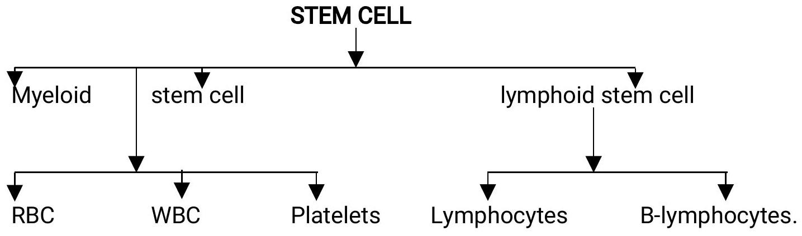

Introduction to Blood Biology and Anemia
Overview of Blood Disorders
This module covers several key topics related to blood disorders:
- Blood biology
- Anaemia
- Bleeding disorders
- WBC disorders
- Leukaemia
- Blood transfusion
- Plasma cell disorders
- Lymphomas
Blood Biology
DEF: Blood is a combination of liquid, cells and cell like particles that goes through the arteries, capillaries and veins - delivering oxygen and other essential nutrients to tissues and carrying away carbon dioxide and other wastes from tissues.
Blood production
- (i) In the bone marrow.
- (ii) Reticuloendothelia system.
Liver and spleen during embryological development.
(iii) And during sickness.
Functions of blood
Primary function
- (i) Transportation of various substances and
- (ii) Exchange of materials in and out of tissues.
Secondary functions
- Cellular metabolism.
- Homeostasis of fluid volume.
- Homeostasis of PH.
- Homestasis of body temperature and depends against micro-organisms.
Blood volume
The average volume in a 70 kg in an adult male is around 5 litres.
Blood is composed of plasma and cells.
Plasma is the fluid portion of blood.
When plasma is allowed to clot the fluid part is called Serum.
It has the same components as plasma except the clotting factors.
Cells contain 45% of the total blood volume.
Plasma contains 55% of the total blood volume.
Blood cells
- Red blood cells are erythrocytes.
- White blood cells are leucocytes.
- Platelets are the thrombocytes.
1. ERYTHROCYTES. (RED BLOOD CELLS)
- Are the most numerous.
- The mature RBC have no nucleus.
- They are biconcave in shape.
- Do not contain organelles like ribosomes and mitochondria.
- In males they are 5.5 million mm/cube.
- In females they are 4.8 million mm/cube.
- In diameter 8 UM (Micrometer).
Is so flexible that can pass easily through the capillaries as small as 2.8 um in diameter.
Anaemia can be classified according to their sizes, microcytic, normocytic and microcytic.
Production
They are produced in the bone marrow i.e. ribs, sterum, pelvis.
The adult bone marrow produces 175 billion encythrocytes 70 billion leukocytes and 175 billion thrombocytes daily.
Destruction
Fragmentation occurs in the capillaries of the liver, spleen and bone marrow Life span is 120 days.
2. LEUKOCYTES. (WHITE BLOOD CELLS).
Are of five types either granular or non-granular.
Granular
- (a) Neutrophilis.
- (b) Eosinophilis
- (c) Basophilis
Non-granular
- (a) Lymphocytes.
- (b) Monocytes.
Neutrophilis are most prevalent and defends the body against fungus and bacteria. Are 1st to arrive at site of infection within one hour.
Eosinophilis kill parasites e.g. worm and other cancer cells.
Basophilis are elevated during allergic conditions.
Lymphocytes - T-Lymphocytes - cellular immunity - (delayed allergic reactions).
B - Lymphocytes - humoral immunity.
T- Lymphocytes derived from thymus.
B-Lymphocytes from bone marrow.
T-cells - During transplant and during destruction of tumor cells.
B-cells - differentiate into plasma cell, which produces antibodies called the Immunoglobulin's which normally destroy the foreign materials.
Monocytes are used in phagocytes. Produce the macrophages. Are 5% of total leukocytes.
Population of leukocytes 5-10 thousand mm/cube.
3. PLATELETES. (THROMBOCYTES).
Used for blood clotting or homeostasis.
Formed in bone marrow and spleen.
Lifespan is 10 days.
Amount 15-450 thousand/mm cube.
BLOOD PLASMA
90% of plasma is water and 10% is plasma.
Proteins Albumins, fibrinogen, globulins.
Blood cells formation (Hematopoiesis)
Precursor of RBC are pro-ecythrocytes which differentiate into reticulocytes (immature RBC) which produces mature RBC.
Precursor of WBC is called Myeloblast which differentiate into myelocytes (Immature WBC) which gives rise to the granular WBC - Neutrophilis, Eosinophilis, and Basophile. Processor of platelets is megataryplasts which differentiate into megakaryocytes which gives rises to thrombocytes.
Anaemia
Is a condition where the number of RBC or HB levels is below normal. Anaemia is a deficiency in the number or quality of red blood cells. The red blood cells carry oxygen around the body, using a particular protein called haemoglobin. Anaemia means that either the level of red blood cells or the level of haemoglobin is lower than normal. These cells are the main transporters of oxygen to the organs in the body. Symptoms like fatigue - occur because the organs aren't getting enough oxygen.
Main causes of anaemia
- Dietary deficiency - lack of iron, vitamin B12 or folic acid in the diet.
- Malabsorption - where the body is not able to use the nutrients in the diet, caused by conditions such as coeliac disease.
- Inherited disorders - such as thalassaemia or sickle cell disease.
- Autoimmune disorders - such as autoimmune haemolytic anaemia, where the immune cells attack the red blood cells and decrease their life span.
- Chronic diseases - such as rheumatoid arthritis and tuberculosis.
- Hormone disorders - such as hypothyroidism.
- Bone marrow disorders - such as cancer or infection.
- Blood loss - due to trauma, surgery, cancer, peptic ulcer, heavy menstruation, bowel cancer or frequent blood donations.
- Drugs and medications - including alcohol, antibiotics, anti-inflammatory drugs or anticoagulant medications.
- Infection - such as malaria and septicaemia, which reduce the life span of red blood cells.
Signs and symptoms of anaemia
- Pale skin
- Fatigue
- Weakness
- Tiring easily
- Breathlessness
- Frequent headaches
- Palpitations
- Becoming irritated easily
- Concentration difficulties
- Cracked or reddened tongue
- Loss of appetite
- Strange food cravings
Diagnosis of anaemia
- Medical history - of any chronic illnesses and regular medications
- Physical examination
- Blood tests - complete blood count and blood iron levels, vitamin B12, folate and kidney function tests
- Urine tests - for detecting blood in the urine
- Gastroscopy or colonoscopy
- Bone marrow biopsy
- Faecal occult blood test - examining a stool sample for the presence of blood.
Treatment of anaemia
- Vitamin and mineral supplements - in the case of deficiency.
- Iron injections - if the person is very low on iron.
- Vitamin B12 (by injection) - required for pernicious anaemia.
- Antibiotics - if infection is the cause.
- Altering the dose or regimen of regular medications - such as anti-inflammatory drugs, if necessary.
- Blood transfusions - if required.
- Oxygen therapy - if required.
- Surgery to prevent abnormal bleeding - such as heavy menstruation.
- Surgery to remove the spleen (splenectomy) - in cases of severe haemolytic anaemia
Types of Anaemia Based on Cause
1. Anaemia due to excessive bleeding
Is the most common cause of anaemia and there is haemodilution. Massive blood loss lead to hypotension and hypo-oxygenation.
Clinical features
- Thirst.
- Fainting.
- Sweating
- Weak rapid pulse.
- Rapid breathing.
- Orthostatic hypotension.
- Shortness of breath (dyspnoea)
- Fatigue.
NB. Rapid loss of atleast 1/3 of blood is fatal.
Management
- Stop the bleeders.
- Blood transfusion.
- Raise foot of the bed.
- Fluid replacement i.e. saline, ringers lactate etc.
- Give, ion and folates for chronic conditions.
- Give oxygen.
2. Anaemia caused by decreased Red blood cell production
There is decrease in nutrients needed in ecythropoiesis. Nutrients needed are iron, Vit B12 and folic acid, Vit C, riboflavin, copper and erythropoietin.
(i) Iron Deficiency Anaemia
Iron deficiency anemia occurs when the body doesn't have enough iron. Iron is important because it helps one to get enough oxygen throughout the body. The body uses iron to make heamoblobin. Hemoglobin is a part of the red blood cells. Hemoglobin carries oxygen through the body. If one does not have enough iron, the body makes fewer and smaller red blood cells. Then the body has less hemoglobin, and one cannot get enough oxygen.
Causes
- Through blood loss.
- In infants and children dietary deficiency.
- Chronic loss e.g. Ca stomach, which cannot be adequately replaced by diet.
- Pregnant women as the fetus needs iron for growth.
- Heavy menstrual bleeding.
- Bleeding inside the body (e.g., ulcers, heamorrhoids, cancer), which is the most common cause in men and post-menopausal women.
- Inability to absorb iron well (e.g., celiac disease, removal of stomach/small intestine).
Factors leading to decreased absorption of iron
- Vegetable fibres.
- Foods with phosphates e.g. beans (always soak beans before cooking to remove phytate)
- Antacids reduces absorption of iron e.g. actals.
Clinical features
- Fatigue.
- Shortness of breath.
- Activity intolerance.
- Pica
- Glossitis - tongue irritation. And very smooth.
- Koilonychias - spoon like deformity on the finger nails.
- Cheillosis - cracks at the sides of the mouth.
- Cold hands and feet.
Diagnosis
- Clinical manifestation.
- Lab investigation - (full hemogram)
- Bone marrow studies.(Biopsy)
(ii) VITAMIN B12 DEFICIENCY.
Also called Pernicious Anaemia (Vit B12 is absorbed in the ileum (last part of small intestines.). Vit B12 must combine with intrinsic factors which are produced in the stomach for absorption to occur. Vit B12 is stored in the liver.
Causes of Vit B12 Deficiency
- Lack of intrinsic factors (proteins produced in the stomach for specific functions).
- Certain diseases e.g. chrohns disease, abnormal bacterial growth which is not conducive.
- Surgery of the stomach and the ileum.
Clinical features
- Night blindness.
- Sore tongue
- Weight loss.
- Darkened skin.
- Decreases intellectual activity.
- Nervous system pathology i.e. tingling, numbness of extremities.
Diagnosis
- Full haemogram.
- Gastric analysis.
Management (specific)
Replacement of Vit B12 i.e. by injection that is given of life. Any other management for anaemia.
(iii) Folic acid deficiency anaemia.
It is caused by lack of folic acid. It also called megaloblastic anaemia.
Sources Folic acid
Dark green leafy vegetables, small sweet bananas.
Other causes
- Epileptic drugs.
- Oval contraceptics.
- Alcohol affects folic acid metabolism thus its absorption is reduced.
- Hemodialysis.
Long term effects
- Congenital abnormalities in pregnancy i.e congenital abnormality e.g. spinabifida, hydrocephalus.
- In infants it causes neurologic deficiencies.
- In adults it causes anaemia (folic acid anaemia)
Diagnosis
- Full haemogram.
- Clinical presentation/manifestation.
Management
- Folic supplements.
- Replacement for life.
- Other management for anaemia.
(iv) Anaemia Caused by Chronic Disease.
Is due to suppression of RBC production in the bone marrow. It is also called Iron-Reutilization anaemia because iron stored in the bone marrow cannot be used by the developing red blood cells.
It is gradual and mild.
Clinical features
Gradual anaemia attacks.
Management
- Blood transfusion.
- Erythropoietin hormone - produced in the kidney and stimulates production of Red Blood cells.